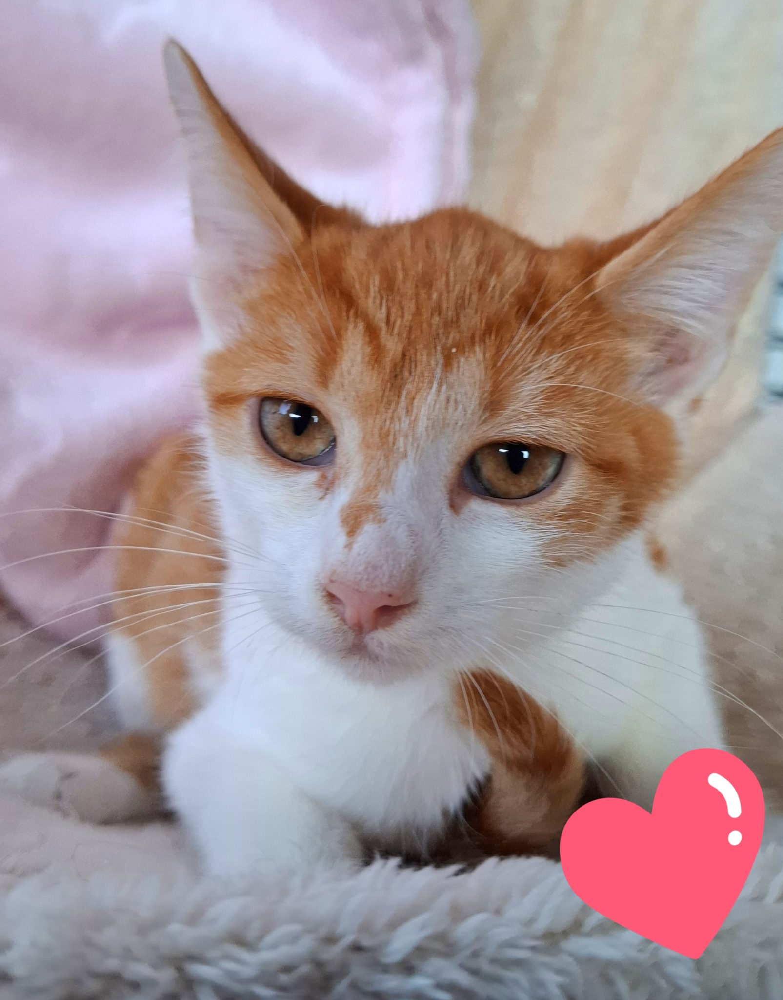
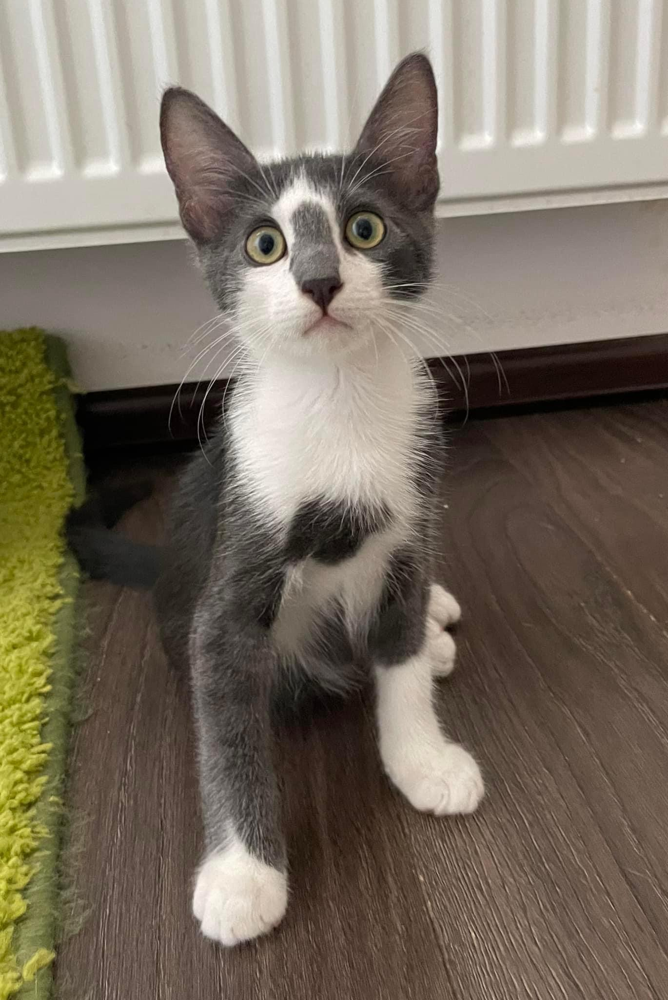

Eugen
Bună sunt un super băiețel, care vrea să fie eroul tău. Să îți arate cum poți să treci prin problemele vieții în timp ce te bucuri de iubire și sprijin. Sunt un motănel roșcat, mic și blând. Deparazitat intern și extern.
Sky
Are 4 luni, este iubitor cu oamenii, torcăcios și jucăuș. Este foarte bun prieten și dornic de joacă cu alte pisici, motiv pentru care îi căutam familie adoptivă în care să mai fie cel puțin o pisică. Este deparazitat și vaccinat.
Formular de adopție